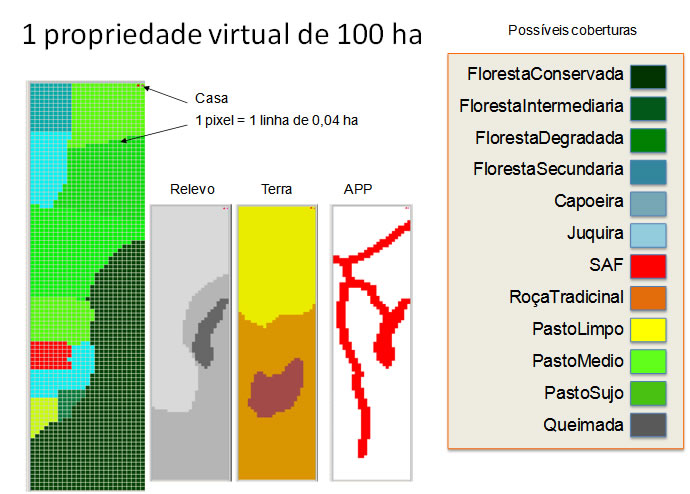
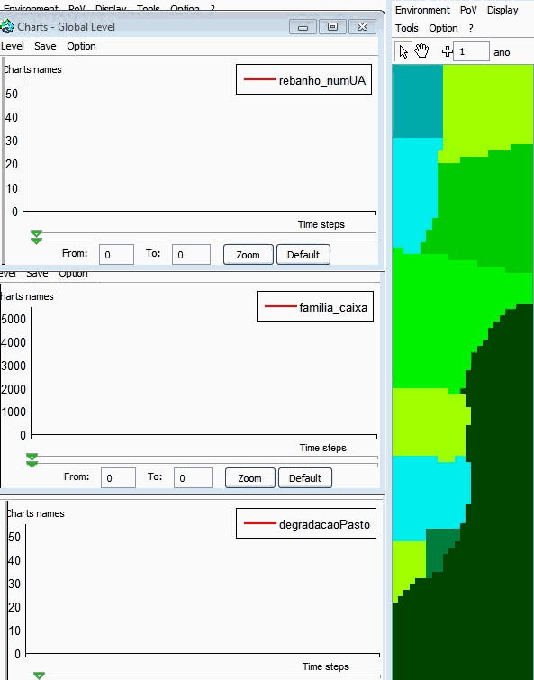
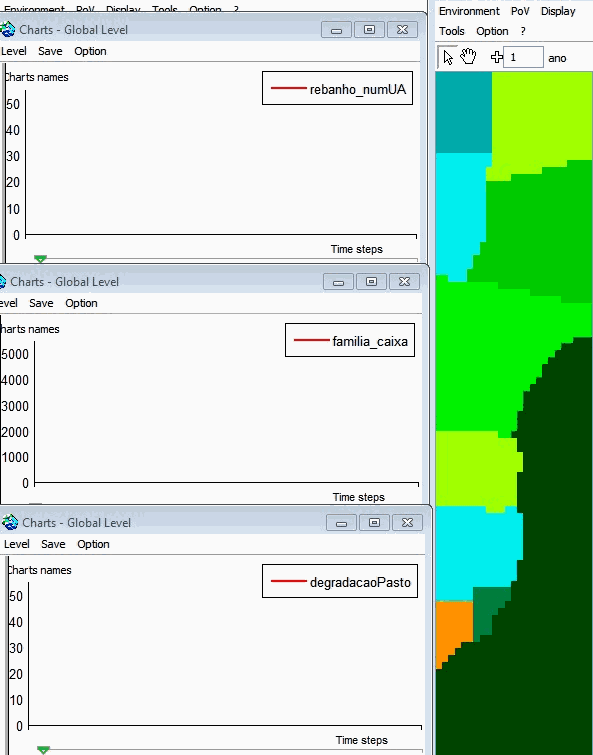
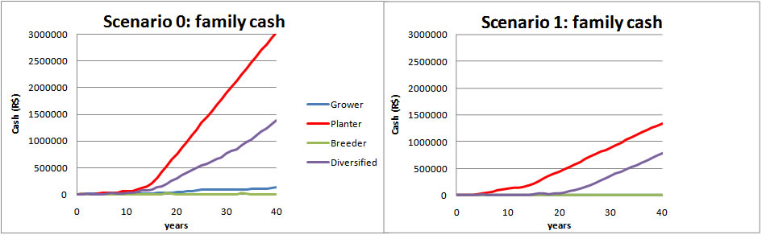

|
Amaz- Back to Amaz main page -Model Description - Go to Results All the scenarios have not yet been finalized. Today the "Business as usual" scenarios and "Respect the law" scenarios are implemented. Initial state of the simulationsThe following results are obtained from simulations using a property of 100 ha already partially cleared and with a family of 5 members with 3 workers. The initial cash is 1000 $ per person. A color code was attached to each type of cover. The following figure presents the initial state of the simulated farm:  First resultsTwo examples of simulationsScenario 0, Breeder priority: run of 40 years Scenario 1, Breeder priority: Comparison of priorities and scenarios 0 & 1The two graphs, below, present the family cash, according to scenrario 0 and scenario 1. For each graph, 4 curves represent the priorities.  Due to the model simplifications, the output cash does not reflect any realistic variable: the family consumption remains unchanged regardless of the income. But we know that consumption generally increases with income (purchase of a vehicle, school, ...). So, the high values obtained have orders of magnitude too high. Here, the interest is to compare these probes for different strategies without payong attention to the magnitude. Whatever the scenario, we can see that the Planter priority (Tree crop farmer, like cacao) has better incomes than other strategies: despite the non-production period (3 years) and the high costs of maintenance, of inputs and of labor, the crop incomes compensate these charges. However, the price per kilo (4 R $ / kg) are quite high in the model, but in addition, they are fixed, which is not always the case on the markets (see cocoa prices). On the other hand, besides the fact that they are subject to market fluctuations, perennial crops do not offer flexibility: unlike a cattle for example, a family can not sell early a part of his culture in case of urgent need (accident, illness, ...). This dimension of risk is not taking into account in this version of the model. Compared to scenarios 0 (business as usual), the scenario 1 (strict compliance with the law) show in all cases an increase in forest areas and the regeneration of the APPs (permanent protection areas). But they also show that, whatever the strategy, the family incomes are significantly reduced, which suggests that these situations are not sustainable. To tackle this aspect, we will test the scenarios 2 and 3 ... - Back to Amaz main page -Model Description - Go to Results
SoftwareYou can download the Cormas model source code (Cormas 2012). A quite similar report in portugues is available. For more information, contact the corresponding author |